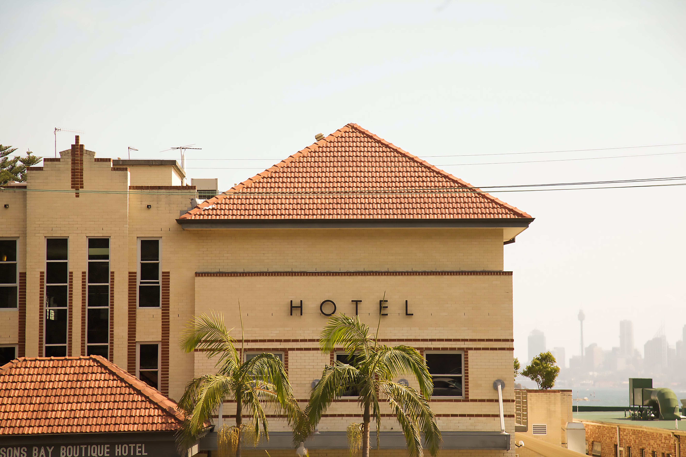

- HTML
- CSS
- JavaScript
HTML이란 무엇인가
놀고싶다 놀고싶어 격하게 놀고싶다 돈벌기 싫어 돈이 그냥 뚝딱하고 나왔으면 좋겠다 일하기 싫어 으ㅏ아ㅏㅏ아ㅏ아아아ㅏㅏㅏ
1. 찬란한 백제 유적을 만날 수 있는 국립 익산 박물관, 미륵사지
전북 익산시 금마면 미륵사지로 362

2. 국내 유일의 보석 박물관
전북 익산시 왕궁면 호반로 8 보석박물관
3. 멍 때리며 산책하기 딱 좋은 성당포구 바람개비 길
전북 익산시 성당면 성당로 762
4. 동서양의 조화가 느껴지는 나바위성당
전북 익산시 망성면 나바위1길 146